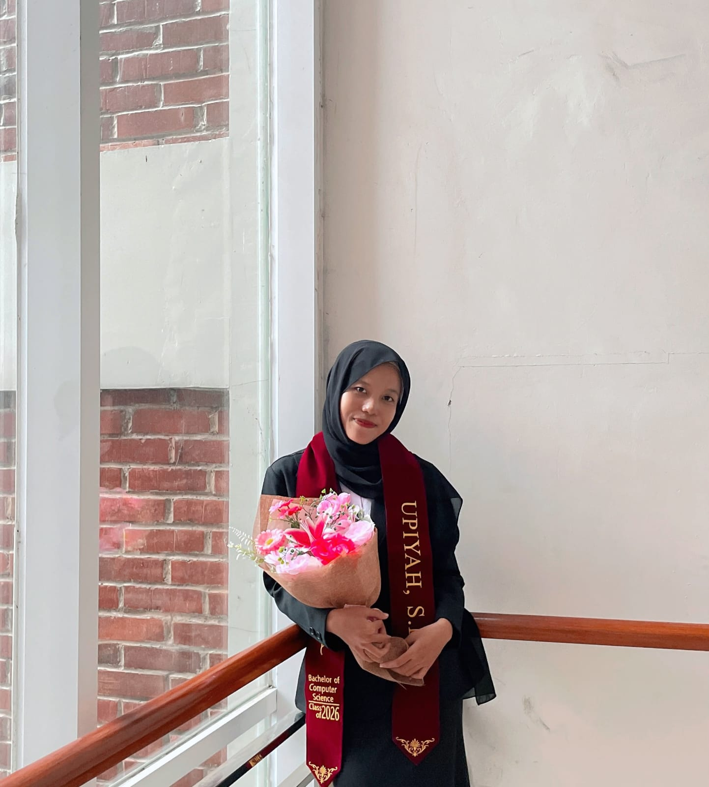
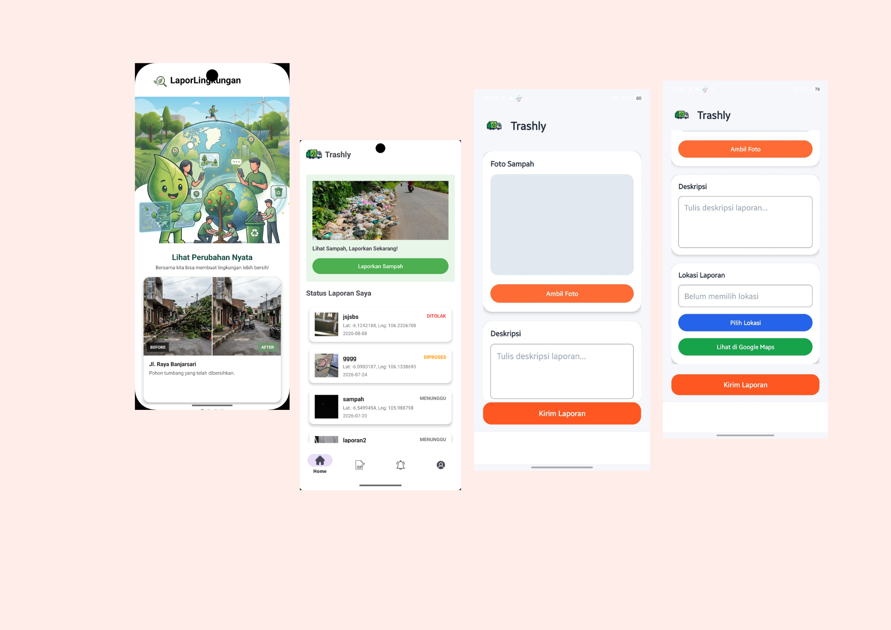
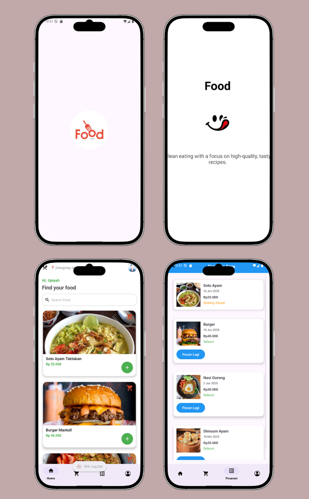
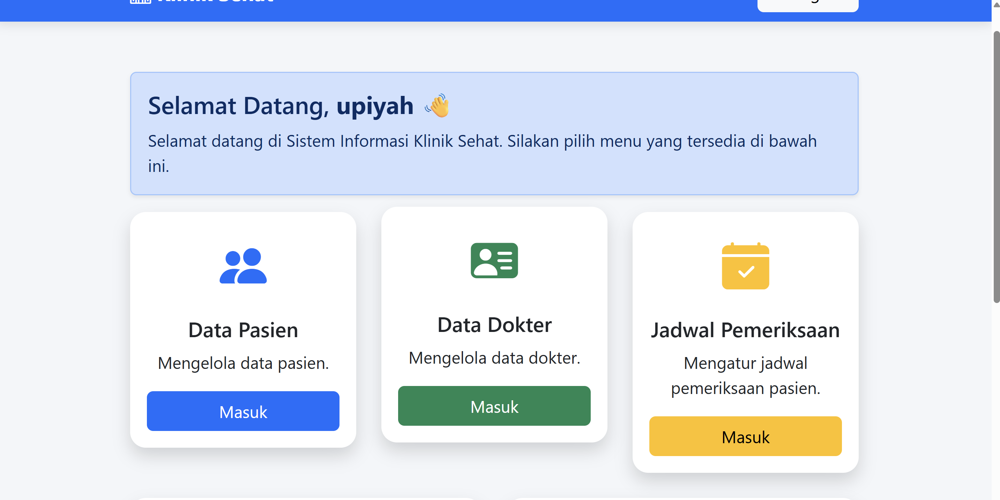
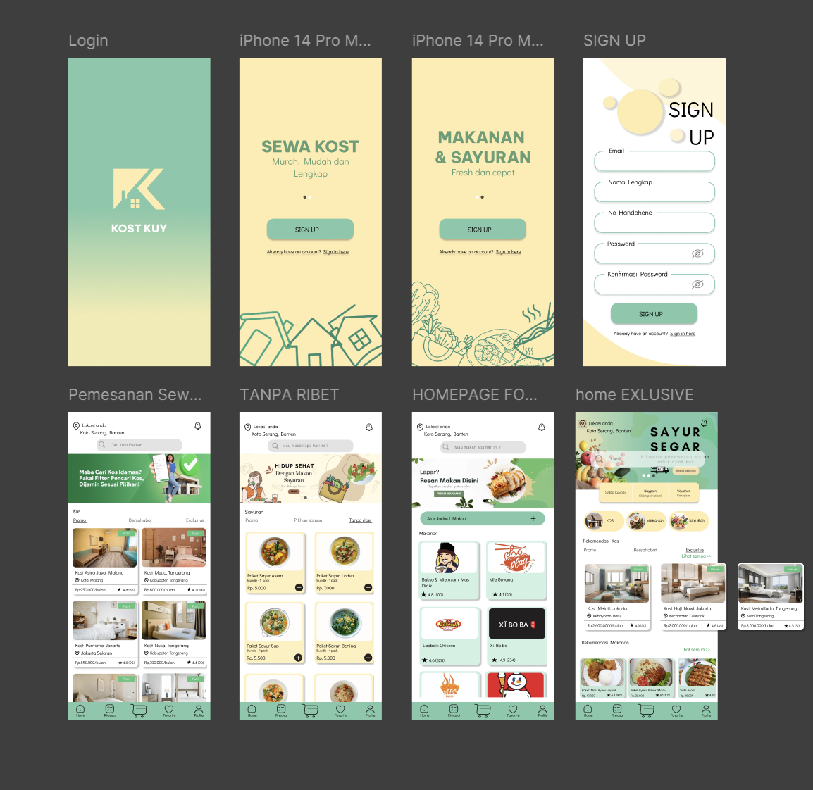
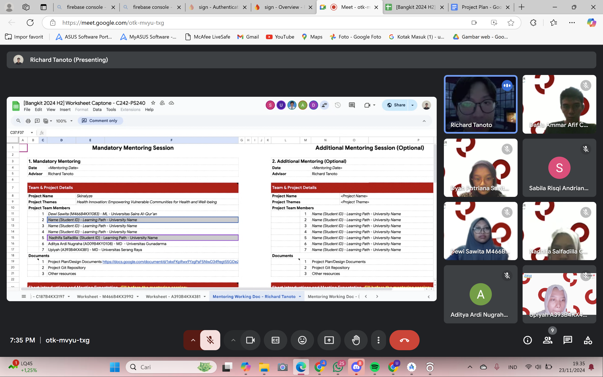

✿ Welcome to my little corner
Hi, I'm UPI!
Hi, I'm UPI!
Creative Tech Enthusiast
Fresh Graduate S1 Teknik Informatika yang tertarik pada Mobile Development, Web Development, dan UI/UX Design. Senang belajar hal baru dan mengubah ide menjadi karya digital.

A little about me
Tentang Saya
Kenali sedikit tentang perjalanan dan minat saya.
Saya merupakan lulusan S1 Teknik Informatika yang memiliki pengalaman dalam mengerjakan berbagai proyek akademik di bidang Mobile Development, Web Development, dan UI/UX Design. Saya memiliki ketertarikan pada pengembangan aplikasi, pembuatan website, serta perancangan antarmuka yang intuitif dan mudah digunakan. Saya juga senang mempelajari teknologi baru dan terus mengembangkan keterampilan melalui berbagai proyek serta pengalaman belajar.
What I can do
Keahlian
Teknologi dan tools yang pernah saya pelajari atau gunakan dalam proyek.
Web & Programming
Database & Design
Things I've created
Pengalaman Proyek
Beberapa proyek akademik dan karya yang pernah saya kerjakan.

Mobile Development · Proyek Akhir
Aplikasi Pelaporan Lingkungan
Mengembangkan aplikasi mobile pelaporan lingkungan untuk Dinas Lingkungan Hidup guna mempermudah masyarakat menyampaikan pengaduan dan memantau laporan permasalahan lingkungan.

Mobile Development
Aplikasi Food
Membuat proyek aplikasi mobile yaitu proses pemesanan makanan secara online.

Web Development · Proyek Akademik
Website Klinik Sehat
Mengembangkan website Klinik Sehat sebagai penerapan keterampilan pengembangan web untuk mendukung penyampaian informasi dan layanan klinik secara digital.

My journey
Pendidikan & Pelatihan
S1 Teknik Informatika
Universitas Serang Raya · [2022–2026]
Bangkit Academy – Mobile Development
Mengikuti program pembelajaran Mobile Development dan mengembangkan proyek aplikasi sebagai bagian dari program.

Learning Activities
Mengikuti rangkaian kegiatan pembelajaran Mobile Development di Bangkit Academy dengan mempelajari pengembangan aplikasi Android, mulai dari dasar pemrograman Kotlin, penggunaan Android Studio, hingga penerapan berbagai komponen dalam membangun aplikasi mobile.

Team Collaboration
Berkolaborasi dan berkoordinasi bersama tim CC (Cloud Computing) dan ML (Machine Learning) dalam menyelesaikan tugas serta mengerjakan Capstone Project sesuai dengan pembagian tanggung jawab masing-masing.

Mobile Development Project
Mengembangkan aplikasi deteksi masalah kulit wajah sebagai bagian dari penyelesaian proyek akhir (Capstone Project) dalam program Bangkit. Aplikasi ini dirancang untuk membantu pengguna mengenali masalah kulit wajah.

Certificate of Completion
Sertifikat sebagai bukti penyelesaian program Bangkit Academy.
Let's connect
Mari Terhubung! 💌
Terbuka untuk kesempatan belajar, kolaborasi, dan pengalaman baru.